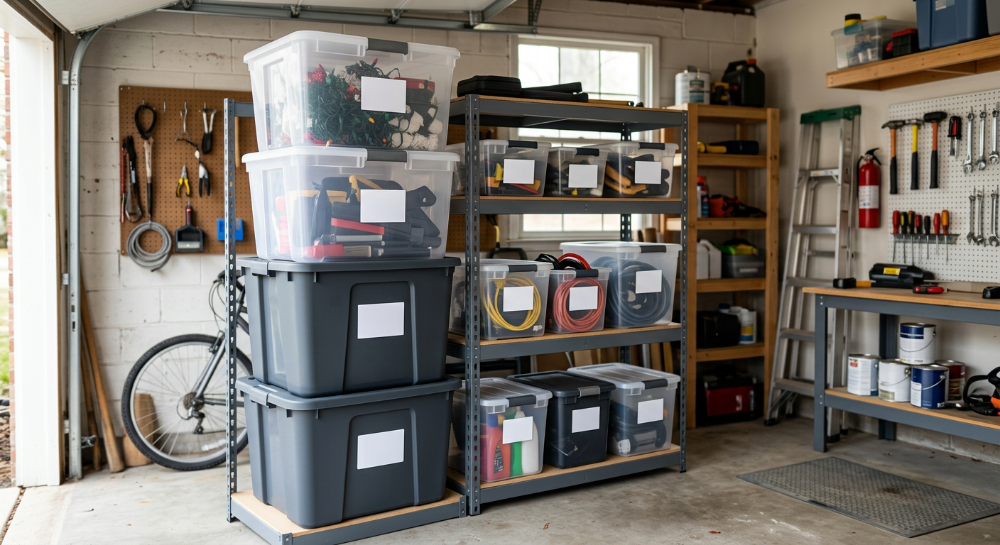

Clear Stackable Bins
Great for seasonal decorations, sports accessories, and hardware backups. You can find items quickly without opening every tote.

Updated for 2026
Disclosure: As an Amazon Associate, we may earn from qualifying purchases.
| Use case | Best bin type | Target spec | Link |
|---|---|---|---|
| Easy visual inventory | Clear stackable bin set | Latching lid + reinforced corners | Check on Amazon |
| Heavy garage loads | Heavy-duty tote | Thicker walls + load-rated lid | Check on Amazon |
| Faster labeling workflow | Label-ready bin system | Flat label panels + uniform sizes | Check on Amazon |
Fastest path: choose one bin style for 80% of your gear to keep stacking and labels consistent across your garage.
| If this sounds like you... | Best first move | Why this converts better long-term | Action |
|---|---|---|---|
| "I lose time hunting for stuff" | Buy clear stackable bins first | Visibility reduces friction, so organization habits actually stick | Start with clear stackable bins |
| "My bins crack or collapse under weight" | Switch to heavy-duty totes | Reinforced walls/lids prevent replacement cycles and stacking failures | Upgrade to heavy-duty totes |
| "Our garage system falls apart every season" | Standardize one label-ready footprint | Uniform sizing keeps shelves stable and makes relabeling faster | Build a label-ready system |
Decision rule: choose the row matching your biggest weekly pain point and buy one starter set before expanding.
Great for seasonal decorations, sports accessories, and hardware backups. You can find items quickly without opening every tote.
Best for power tools, auto supplies, and dense loads. Look for stronger latches, thicker plastic, and sturdier side walls.
Ideal for repeatable organization systems. Uniform tote sizes reduce wasted shelf space and make re-stacking simpler.
| If you store... | Typical bin size target | Reason |
|---|---|---|
| Small parts and backup supplies | 6-12 gallon | Easier sorting and less over-stacking risk |
| Mixed household overflow | 12-27 gallon | Best balance of volume and liftability |
| Bulky seasonal gear | 27+ gallon | Fewer containers for larger items |
Pro tip: before buying, test one full bin lift from floor to shoulder height. If it feels awkward, downsize before committing to a full set.
| Garage condition | Bin priority | What to avoid | Action |
|---|---|---|---|
| Hot attic-like garages | Thicker-wall totes + stronger latches | Thin brittle plastics that warp under heat cycles | See heat-tolerant tote options |
| Cold winter garages | Impact-resistant bins with reinforced corners | Budget bins that crack when dropped in low temps | See cold-garage bin options |
| Damp or humid areas | Tight-latch lids + raised shelving placement | Loose lids placed directly on concrete | See weather-resistant bins |
Buying shortcut: match bins to your harshest garage condition first, then choose size. That prevents replacing cracked or warped totes later.
| Garage size | Starter pack mix | Why this mix works | Action |
|---|---|---|---|
| Single-car / tight bay | 6 bins (12-17 gal) + 2 small parts bins | Keeps footprint compact while covering tools, auto fluids, and seasonal overflow | Build a compact bin setup |
| Standard 2-car garage | 8 bins (17-27 gal) + 4 small parts bins | Balances capacity and safe lifting for the most common family storage loads | Build a 2-car garage setup |
| Large / workshop garage | 10-12 bins (27 gal mix) + 4 label bins | Supports bulky seasonal gear while preserving a consistent labeling workflow | Build a high-capacity setup |
Conversion shortcut: buy one complete "starter pack" first, test stack stability for a week, then expand with the same bin footprint to avoid costly mismatches.
For most garage shelving setups, 12 to 27 gallon bins balance storage capacity with easier lifting and safer stacking.
Clear bins are faster for visual inventory, while opaque heavy-duty totes usually offer better UV resistance and impact protection.
Use same-size bins in each stack, keep heavier items at the bottom, and avoid exceeding the manufacturer’s stack height guidance.
Prioritize reinforced corners, stronger latch designs, and load-rated lids so bins hold shape under repeat stacking in hot or cold garage conditions.
Related guides: space-saving shelving systems and garage layout comparisons.
This guide is based on product-positioning research, common shopper needs, and side-by-side feature comparisons designed to help real households choose practical garage storage options faster.